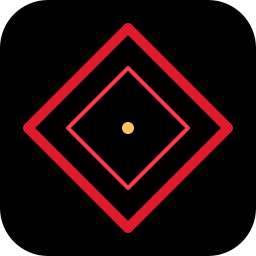

Скачайте zip или portable
Standard — папка с engine. Portable — один exe со встроенным движком.

Графическая оболочка для winws из zapret: пресеты, статус, проверка Discord и YouTube.
Актуальная сборка — на странице Releases.
Нужны Windows 10/11 x64 и права администратора (WinDivert). .NET у пользователя ставить не нужно.
Standard — папка с engine. Portable — один exe со встроенным движком.
UAC запросит права при первом старте. Без них драйвер не поднимется.
Приложение подберёт пресет и проверит доступ к Discord и YouTube.
Коротко о установке, антивирусе и обновлениях. Полный текст — в docs/FAQ.md.
Часто да: winws и WinDivert перехватывают трафик, эвристики принимают это за угрозу. Добавьте папку приложения в исключения. Подробности — в гайде по code signing и AV.
Настройки → Обновления → «Проверить» / «Обновить программу». При старте приложение также сообщит в трее, если вышла новая версия.
Манифесты лежат в репозитории (packaging/). Пока пакеты не в официальных репозиториях — ставьте из GitHub Releases или по инструкции в README.